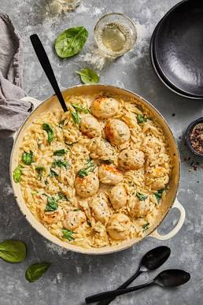

Garlic Parmesan Chicken Meatballs with Orzo
↓ Jump to Recipe
Servings:
4
⬇ Download PDF

"The ultimate cosy, creamy, garlicky dinner that feels indulgent but is still easy enough for a weeknight. Juicy chicken meatballs infused with herbs and cheese, simmered in a rich, silky one-pan orzo sauce."
Ingredients
Meatballs
- 500g chicken mince
- 80g fine breadcrumbs
- 30g grated Parmesan
- 1 egg
- 1 tsp Dijon mustard
- 1 tsp honey
- 1 tsp garlic granules
- 1 tsp paprika
- 1 tsp oregano
- Juice of ½ lemon
- 1 bulb roasted garlic (or 1 tbsp roasted garlic paste)
- 5g fresh parsley, finely chopped
- 1 tsp olive oil (+ 1 tbsp for frying)
Sauce & Orzo
- 300g orzo
- 1 shallot, diced
- 3 cloves garlic, minced
- 100ml white wine (optional)
- 300ml double cream
- 600ml chicken stock
- ½ tsp Dijon mustard
- 1 tsp paprika
- 1 tsp oregano
- 30g Parmesan, grated
- 5g fresh parsley, chopped
- Zest of ½ lemon
- Salt and pepper to taste
Instructions
- Prep the meatballs: In a large bowl, combine all meatball ingredients until well mixed. Roll into uniform small balls to ensure quick and even cooking.
- Sear the meatballs: Heat 1 tablespoon of olive oil in a large saucepan over medium-high heat. Fry the meatballs, turning regularly, until golden brown on all sides and cooked through (approx. 10–15 minutes). Remove and set aside.
- Build the flavor base: In the same pan, melt a little butter and sauté the diced shallot until softened. Add minced garlic and cook until fragrant. Stir in paprika, oregano, and dry orzo, coating the pasta in the butter and spices. Pour in the white wine (if using) and allow to bubble for a minute to deglaze.
- Simmer the orzo: Pour in the double cream, Dijon mustard, and most of the chicken stock so the orzo is fully submerged. Cover and simmer for 5 minutes, stirring halfway through. Uncover, stir, add the remaining stock, and nestle the meatballs back in. Cover and simmer for an additional 5 minutes until the orzo is tender and saucy.
- Finish and serve: Sprinkle over the grated Parmesan, fresh lemon zest, and chopped parsley. Stir gently and cook for a final few minutes on low heat until the sauce is glossy and creamy. Serve immediately.